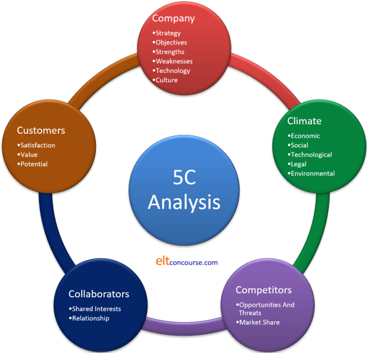
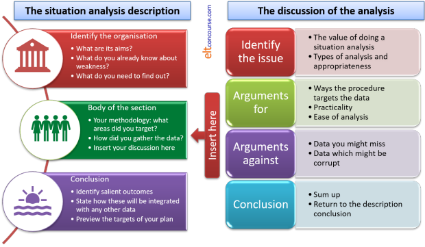

Delta Module Three ELT Management: situation analysis
 |
Much will depend on the focus of your Module Three study, of course, so the following can only be generic in nature. The following is premised on the understanding that you have read around this area and are aware of the main kinds of situation analyses in the literature. The second premise is that you are involved now in designing your situation analysis so can work on it as we go along. The form of situation analysis that you undertake will be very heavily influenced by the focus of your assignment. What is useful and relevant for, e.g., a marketing initiative with be less useful (or even useless) for an issue to do with Teacher development or Human resource management. The suggested word count for this section is 1,000 words, give or take 10%. |
 |
What do you know and what do you need to know? |
There is a wide range of things that you might want to know.
You need to select those areas which are important
to your intentions and your organisation. To do that, you need to
understand the organisation so step outside it for a moment and note
down:
- What are its main characteristics?
- What type of teaching does it focus on?
- What is its purpose?
- What are its ambitions?
- Who are the stakeholders?
- How does it fit with the local and national context?
This part of your essay is not the place to describe the organisation or your role in it in great depth. The questions above are mostly for you so that you are clear about the main characteristics of the organisation.
Here are two examples of how to proceed once you have a picture clear in your head:
Example 1
You are focused on enhancing your institution's marketing and promotional materials and the media in which they appear.
The first thing to note is that you will have to make a thorough
analysis of what marketing the organisation currently undertakes with
some appreciation of how effective it has been in the past.
You also need to consider what your marketing budget currently is and
discuss any constraints concerning the amount the organisation is able
or willing to invest to enhance what you do.
How will you go about gathering these data?
Click here when you have an answer to that.
You could:
- Undertake a 5C analysis: Company, Competitors,
Customers, Collaborators, Climate.
A 5C analysis might look something like this although only the 5 major categories will be common to all. You have to decide, based on what you are doing, which subcategories you need to consider. The ones in this diagram are indicative, not mandatory:

Here is a suggestion for this topic, working clockwise round the diagram:- Company:
Make a list of all the marketing initiatives that have been used in the past few years and compare the amount spent and the targets of the marketing with outcomes. For example, if the organisation invested heavily in advertising in a local paper at one point, do you have a way of finding out if the advertising actually produced a significant amount of new business? If you do not have a way of judging that, perhaps part of your innovation is to create a procedure to enable you to judge.
Here, you are addressing the subcategories of strategy and objectives. You can also consider technology here, of course. - Climate (or, you may prefer, Context):
Make an appraisal of what the demographic (social and economic) is that you want to target and what technological and other aids are available to you and it.
What legal and environmental issues might impinge on this? - Competitors:
Analyse what your competitors do in terms of marketing.
How successful do they seem to have been? - Collaborators:
See if you have collaborators (agents, information bureaux etc.) who use marketing strategies with whom you can cooperate to make things more effective.
In terms of the relationship you have with them, are your collaborators involved in getting students or employing them or teaching them after they leave you? We are referring here to upstream and downstream relationships, respectively. - Customers:
Consult your current customers to discover which parts of your marketing (if any) they found most attractive and influential.
What new sources of customers might you be able to access?
- Company:
- Make a list of all the possible ways there are of marketing a
product (drawing on your reading and research) and then note which
of these your organisation currently does not use or uses rarely.
Are there reasons for this?
This is not the place to plan a marketing programme. The purpose of a situation analysis is to inform the planning that comes later. It is purely a data-gathering exercise intended to:
- discover what opportunities have been taken in the past and judge how well they have performed
- identify possible ways to extend or enhance a marketing programme
Example 2
You are focused on developing a teacher development programme so that
the teaching team are equipped with the skills they need to supply the
courses you run (or hope to run).
Again, before you can start, you need to find out
consider three crucial issues.
What do you think they might be?
Click here when you have an answer.
- You need to identify exactly where there are any skills gaps in
the teaching team's profile. This means a certain amount of
critical objective appraisal allied to some careful and honest
introspection. You need to set out here how you will gather
the data and how you will then prioritise needs. Ways of
gathering the data might include:
- observation (by an internal manager or external consultant)
- meetings to discuss what development people want
- meetings to discuss what development the institution needs
- focus groups of similarly experienced or inexperienced teachers so that you can identify whether needs are variable
- reading and research
- You need to find out what resources the organisation and the staff are prepared to devote to development programmes. Knowing this will enable you to plan a programme realistically rather than approaching it from an ideal-world perspective.
- You need to know what resources you already have internally and what gaps will have to be filled by external consultants, trainers and other experts or training courses.
 |
Do not do this! |
The moral of all this is to make sure that you are 100% clear about the situation as it stands and can identify areas for improvement and development. These data are the minimum you need before you can being to make a plan.
 |
Commenting on the data |
In what follows, the assumption is that you are have written a little about the organisation (the answers to the first set of questions above) and that you have identified the facet(s) that form the targets of your study and plan.
Here's the advice:
- Get away from generalities as soon as you can and narrow the focus to the specific area of the organisation's activities which are the focus of the endeavour.
- Read and apply your reading to the context. You need to do more than simply stating, for example, the nature of a 5C or a SWOT analysis. You must apply the principles to the data you are gathering with a target in mind.
- Choose the ways you gather data carefully, give examples of the procedures in the appendices and critically discuss the pros and cons of the methods you used. No data-gathering procedure is ideal and all will have drawbacks as well as advantages. How clean are your data?
- What priorities emerge from the data? Summarise (perhaps in a chart, if that's appropriate) making it clear what the outcomes are and how you will focus your plan.
- Set out the major areas that the plan will attack.
 |
Writing all this up |
In the diagram below, the Conclusion section of the needs analysis
discussion includes Identify salient
outcomes. This means you must list and
prioritise the outcomes of the analysis. It also means
that you need to say what the criteria are that you used to prioritise
the needs.
It will help to write two lists:
- A list of the essentials along the lines of
This need is important because (insert the criteria you used to identify this fact) ... and is included in the (insert a clear reference to which part of the proposal you are talking about) ... section of the Implementation plan (see page x). - A list of aims and needs that are less vital along the lines of
Although the need for (state the need you identify) ... is identifiable from the data, it is not included in the proposal because (insert criteria [lack of time, not important for the majority of stakeholders, not feasible given the budgets and resources available etc.]) so does not form part of the proposal's targets.
Here's a coherent way of structuring this part of your assignment. Note the need to insert a discussion section into the heart of the description and how that is differently staged and structured.

 |
The appendices are extra |
These do not take the place of discussion in the main text.
You need to include all the instruments you used to gather data.
Do not summarise the outcomes here – the summary belongs in the main
text.
In the appendix, include all the data you gathered so that the
discussion (see above) of effectiveness, advantages and disadvantages is
clear to a reader who takes the time to refer to the appendix but also
to one who takes the data on trust.
 |
Review what you have written |
This section of the assignment carries 20% of the marks available
for the whole assignment so it's important to read through it again when
you have finished (or think you have) and check how a reader will react
to it.
In particular, will a reader know:
- how and why you have targeted your situation analysis?
- that you have conducted procedures which are relevant to what you need to learn?
- what your rationale for the design of the procedures was and that you are aware of any drawbacks which may affect how clean the data are?
- what you have prioritised and why?
If the answer to any of these questions is No or Maybe, go back and re-write some of the section.
 |
Avoid the obvious errors |
Examiners' reports contain more or less the same catalogue of
weaknesses year after year so be careful to avoid any of the
following being levelled at this part of your assignment.
For this section, the most frequently cited problems are:
- a failure to adequately reference sources, use relevant
terminology and demonstrate a link between theory and practice
- Make sure you show that you understand the principles that underlie the instruments you are using
- focusing too much on the general characteristics of situation
analysis without focusing clearly enough of your aims and your
organisation's needs
- Keep a balance and make sure you demonstrate both an understanding of the theory and can apply it rationally to a specific situation
- failing to provide sufficient analysis
- Do not rely on what you know or think you (or others) know. You need to get the data objectively and rationally and not allow preconceptions to get in the way
- failing to keep the focus balanced by being too concerned with a
single issue
- Make sure there is sufficient range for you to be able to prioritise
- tending to list the priorities identified,
with limited discussion about how these were chosen
- Don't just list the priorities. Link each one to the findings of the analysis
- Do not expect the reader to recognise what the priorities are. List them and link them.
Test yourself on the contents of this guide.
| The Module Three ELT Management areas: | |||
| Choosing the topic | Writing the essay | The introduction | Situation analysis |
| Proposal | Implementation | Reading list | Before you submit |